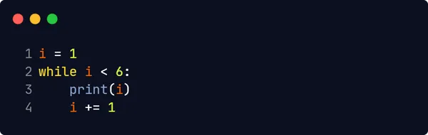

Python are 2 loop-uri principale:
while loopfor loopCu ajutorul buclei while puteți executa un set de instrucțiuni atâta timp cât o condiție este adevarată
Dacă nu am crește variabila i, bucla while va continua pentru totdeauna
Cu ajutorul instrucțiunii break puteți opri bucla dacă condiția din while este
adevarată:
Cu ajutorul instrucțiunii continue puteți opri iterația curentă și puteți continua cu
urmatoarea:
Cu ajutorul instrucțiunii else puteți rula un bloc de cod o data când condiția nu mai este
adevarată: